Introduction to developing for OS X: Your First App
Introduction
This introductory series about building apps on OS X has covered a lot of ground. If you haven't already read them, go and take a look now so that you have a grounding from which to build in this tutorial. This is what you've already learned:
-
Tooling In part one you learned about the many facets of Xcode - and had a glimpse of how you could use it to start developing for OS X.
-
App Anatomy The second part covered a lot of the theory behind how OS X app are constructed - from the data layer, through the binary assets, to designing the UI.
In this final part, you're going to dive deep into the world of OS X development, by creating your first ever app!
Rather than creating some toy project, your going to jump feet-first into building an app which searches and displays animated GIFs. As you might guess, this isn't a trivial app, but a realistic, fully-functional app. There's a lot to do, so there will be bits of theory that you'll have to catch up on in later tutorials.
gifMe
The app you're going to build from scratch it called gifMe - it's a search app for animated GIFs. When the user enters a search term, gifMe queries the giphy.com API, and then displays the results in a collection view. The images are animated when the user clicks on them.

Note: This app requires OS X El Capitan, so if you don't have it - make sure you upgrade to it before trying to follow the tutorial.
That's enough introduction - time to get coding!
Creating the Project
Open Xcode and click Create a new Xcode project to start your new app. Choose OS X \ Application \ Cocoa Application:
 Set the product name gifMe, the language to Swift and ensure that the Use Storyboards is checked:
Set the product name gifMe, the language to Swift and ensure that the Use Storyboards is checked:
 Choose a location on disk to save your project and then click Create to open your empty project.
Build and run gifMe to check that everything is working:
Choose a location on disk to save your project and then click Create to open your empty project.
Build and run gifMe to check that everything is working:
 Great - so the app runs, but it does absolutely nothing yet. In the next section you're going to build the data layer that will perform the GIF searches.
Great - so the app runs, but it does absolutely nothing yet. In the next section you're going to build the data layer that will perform the GIF searches.
Data Layer
The data layer is responsible for querying the giphy API with a search term, and then returning the results in a useful form.
To start, you're going to create a Swift struct that will model each search result.
Right click on the yellow gifMe group, and use the menu to create a new group:
 Call this group Data Layer. Right click on this new group, and select __New File...__:
Call this group Data Layer. Right click on this new group, and select __New File...__:
 Choose OS X \ Source \ Swift File and call the new file Giphy.swift:
Choose OS X \ Source \ Swift File and call the new file Giphy.swift:
 Add the following code to this new file:
Add the following code to this new file:
struct GiphyItem {
let id: String
let caption: String
let url: NSURL
}
This defines a struct with three different properties - id is a unique string returned by giphy, the caption is string associated with the item and url is the location the GIF can be downloaded from. For an app as simple as gifMe, this is all you need in your data model - sweet, huh?
JSON Parsing
The giphy API returns JSON, and you need to convert this into your new GiphyItem structs. Rather than write all the guts of this code yourself, you're going to use a simple library called SwiftyJSON to do the heavy lifting.
Download SwiftyJSON.swift and drag it from Finder into the Data Layer group in your Xcode project. When asked, ensure that Copy items if needed is checked:
 This adds the SwiftyJSON functionality, which will make parsing the giphy JSON a lot easier.
You can now add an initializer for
This adds the SwiftyJSON functionality, which will make parsing the giphy JSON a lot easier.
You can now add an initializer for GiphyItem that accepts a JSON object. Copy the following into Giphy.swift:
extension GiphyItem {
init?(json: JSON) {
guard let id = json["id"].string,
let caption = json["caption"].string,
let urlString = json["images"]["fixed_height"]["url"].string,
let url = NSURL(string: urlString) else {
return nil
}
self.init(id: id, caption: caption, url: url)
}
}
This code creates a new initializer for GiphyItem that extracts the relevant fields from a JSON object. SwiftyJSON provides the functionality that allows you to use subscripting to extract data from a JSON object.
Next you need to create a function that will perform the search - querying the giphy API and returning an array of GiphyItem results. In order to assist with this, you need to add another file to your project. This file contains helper functions to construct the giphy API URL for a given search term, and to convert the returned JSON into an array of GiphyItem objects.
Download GiphyUtils.swift, and drag it from the finder into the Data Layer group. Once again, ensure that Copy items if needed is checked.
You can now construct a function that will perform the API query.
Add the following code to Giphy.swift:
func searchGiphy(searchTerm: String, resultHandler: (GiphySearchResult) -> ()) {
// 1:
guard let url = urlForSearchTerm(searchTerm) else {
print("Error creating the search URL")
return
}
// 2:
let task = NSURLSession.sharedSession().dataTaskWithURL(url, completionHandler: {
(data, response, error) in
if let error = error {
print("Error: \(error.localizedDescription)")
resultHandler(GiphySearchResult.Error(error))
return
}
// 3:
let json = JSON(data: data!)
// 4:
let giphyItems = convertJSONToGiphyItems(json)
// 5:
resultHandler(GiphySearchResult.Result(giphyItems))
})
// 6:
task?.resume()
}
-
urlForSearchTerm(_:) is a function provided by GiphyUtils.swift. It generates the correct URL for the given search term. The guard statement ensures that a URL was successfully returned.
-
Requesting data from the network involves creating an asynchronous task, using the URL and a closure that defines what happens when the task completes.
-
JSON is the main type within SwiftyJSON. It's initialized with the data received from the giphy API.
-
convertJSONToGiphyItems(_:) is another function provided by GiphyUtils.swift. It uses the custom initializer for GiphyItem you created earlier to generate an array of GiphyItem structs.
-
Since this is an asynchronous function, rather than returning the result, you provide it via a callback function.
-
Once you've created the task, calling
resume() will start the network request.
Note that this method doesn't return any values. This is because the network request is an asynchronous process, so instead you provide a resultHandler closure that gets called once the request has completed (see step 5).
Without any UI, it's difficult to demonstrate what you've done is working - but you can turn to logging. You're going to use this new search function to perform a search, and print the results out to the console.
Open ViewController.swift and add the following code to the end of the viewDidLoad() function:
searchGiphy("excited") {
giphyResult in
switch giphyResult {
case .Error(let error):
print(error)
case .Result(let items):
print(items)
}
}
This uses your new search method, and prints out the results. Build and run your app and then check the console. You'll see a load of text detailing the array of GiphyItem objects returned by the search:
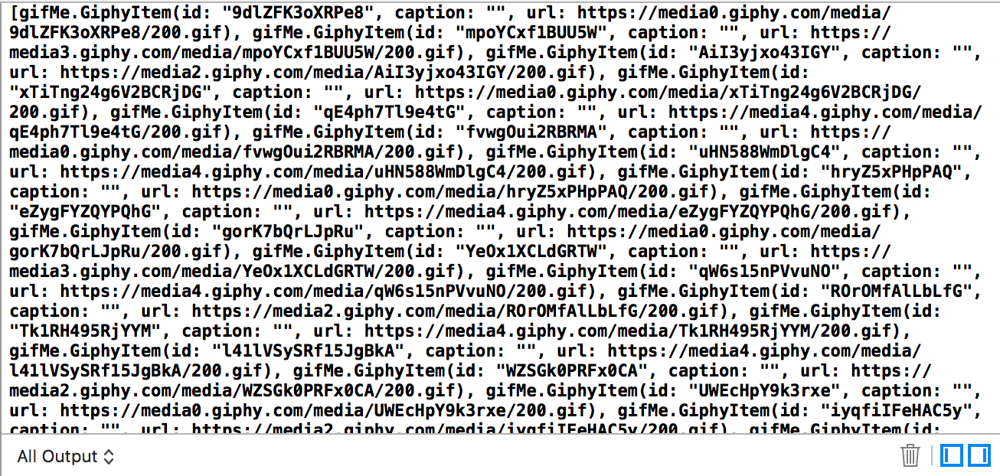
You've now created a model to represent the search results, and a function that will query the giphy API with a search term. That's it for the data layer - time to move your attention to the UI!
User Interface
The user interface of gifMe is made up of two parts - the results view, and the search interface. You're going to start by creating the results display, before moving on to adding the search functionality.
Results UI
The results will be shown in a collection view, which is a way to display a set of elements - by default in a grid-like fashion. As the size of the collection view changes, it'll re-arrange the items automatically.
Collection views in OS X are represented by the NSCollectionView class. You are going to build the UI in Interface Builder, and then configure it in code.
Open Main.storyboard and find the View Controller scene. In the current configuration, this view controller represents the entire content of the view. You're going to add a collection view to this scene, which will show the images from the search results.
Use the search box at the bottom of the object library to find the Collection View:
 Drag a collection view from the object library on to the View controller scene:
Drag a collection view from the object library on to the View controller scene:
 This will add a collection view to the scene, and also a new scene scene which represents the layout for each of the items in the collection view:
This will add a collection view to the scene, and also a new scene scene which represents the layout for each of the items in the collection view:
 Due to a bug in the current version of Xcode, you will have to provide the layout for the collection view item in a separate XIB file. Select the Collection View Item scene and press delete to remove it.
You want to specify that the collection view should fill the entirety of the view controller. You will do this using a system called Auto Layout. This is a layout engine that can determine the sizes and positions of view elements at runtime, as dictated by a set of relationships that you provide at design time. You want to specify that the collection view should fill the entire scene, so you'll provide constraints that specify that its edges should be pinned to the edges of its containing view.
Select the collection view, and then use the Pin menu in the bottom bar to specify that there should be a distance of 0 around each of the edges. Ensure that Update frames is set to Items of New Constraints before adding the constraints.
Due to a bug in the current version of Xcode, you will have to provide the layout for the collection view item in a separate XIB file. Select the Collection View Item scene and press delete to remove it.
You want to specify that the collection view should fill the entirety of the view controller. You will do this using a system called Auto Layout. This is a layout engine that can determine the sizes and positions of view elements at runtime, as dictated by a set of relationships that you provide at design time. You want to specify that the collection view should fill the entire scene, so you'll provide constraints that specify that its edges should be pinned to the edges of its containing view.
Select the collection view, and then use the Pin menu in the bottom bar to specify that there should be a distance of 0 around each of the edges. Ensure that Update frames is set to Items of New Constraints before adding the constraints.
 That's all you need to do with the layout of the collection view itself.
Currently, there is no way to access the collection view from code - which you'll need to be able to do to configure it. Xcode has a system whereby you can create an outlet in code which will attach to the object in the storyboard at run time. You're going to do that now for the collection view.
Open the assistant editor in Xcode by selecting it in the menu bar:
That's all you need to do with the layout of the collection view itself.
Currently, there is no way to access the collection view from code - which you'll need to be able to do to configure it. Xcode has a system whereby you can create an outlet in code which will attach to the object in the storyboard at run time. You're going to do that now for the collection view.
Open the assistant editor in Xcode by selecting it in the menu bar:
 Use the jump bar in the assistant editor to select Automatic \ ViewController.swift.
Use the jump bar in the assistant editor to select Automatic \ ViewController.swift.
 Back in IB, locate the collection view in the Document Outline:
Back in IB, locate the collection view in the Document Outline:
 Ctrl-Drag from the Collection View over to View Controller.swift:
Ctrl-Drag from the Collection View over to View Controller.swift:
 Name the new outlet
Name the new outlet collectionView:
 You'll see that this adds the following property to ViewController.swift:
You'll see that this adds the following property to ViewController.swift:
@IBOutlet weak var collectionView: NSCollectionView!
You'll use this item later - but first you need to provide the design for each item in the collection view.
### Collection View Item
Each search result will be represented by a collection view item - which is a subclass of NSViewController. You'll need a custom subclass so you can write code to display your GiphyItem model object correctly.
Use the menu to select File \ New \ File... and find OS X \ Source \ Cocoa Class in the template chooser. Name the class GiphyCollectionItem, and make it a subclass of NSCollectionViewItem. Ensure that Also create XIB file for user interface is checked:
 You can use Interface Builder to provide the design for these items, in a cut-down version of a storyboard, called a XIB. Whereas storyboards support multiple scenes, a XIB has no concept of flow between scenes - instead just providing layout for a view.
Open the newly-created GiphyCollectionItem.xib - you can see a blank custom view. Find an Image View in the Object library and drag it onto the blank view:
You can use Interface Builder to provide the design for these items, in a cut-down version of a storyboard, called a XIB. Whereas storyboards support multiple scenes, a XIB has no concept of flow between scenes - instead just providing layout for a view.
Open the newly-created GiphyCollectionItem.xib - you can see a blank custom view. Find an Image View in the Object library and drag it onto the blank view:
 As before, use the Pin menu to create the Auto Layout constraints to set sizes of the 4 margins to be 0.
You now need to wire this new image view up to the collection view item class. Since the Xcode knew you were going to use this XIB with the
As before, use the Pin menu to create the Auto Layout constraints to set sizes of the 4 margins to be 0.
You now need to wire this new image view up to the collection view item class. Since the Xcode knew you were going to use this XIB with the GiphyCollectionItem class you created, it has already linked the File's Owner property to the class - you just need to link the image view.
In the Document Outline, Ctrl-Drag from the File's Owner to the Image View inside the Custom View. Select imageView in the popup box.
 That's all you need to do for the design of the collection view item - time to move your attention to writing its code.
That's all you need to do for the design of the collection view item - time to move your attention to writing its code.
Loading Images
Remember back to the GiphyItem data model - it doesn't provide an image, but a URL where the image can be found. Therefore, the collection view item will be responsible for downloading the GIF.
Add the following properties to the GiphyCollectionItem class in GiphyCollectionItem.swift:
private var imageDownloadTask : NSURLSessionDataTask?
private static let imageCache = NSCache()
imageDownloadTask is the network request that you'll create to download an image. You need to keep a reference to it so that you can cancel it if you need to. GIFs are very large files, so rather than re-downloading them repeatedly, you're going to cache them in imageCache.
Add the following function to GiphyCollectionItem:
private func loadImageAysnc(url: NSURL, callback: (NSImage) -> ()) {
// 1:
imageDownloadTask = NSURLSession.sharedSession().dataTaskWithURL(url) {
(data, _, _) in
if let data = data {
// 2:
let image = NSImage(data: data)
// 3:
dispatch_async(dispatch_get_main_queue()) {
// 4:
callback(image!)
// 5:
self.imageDownloadTask = nil
}
}
}
// 6:
imageDownloadTask?.resume()
}
-
As you did with the API request - create a download task to grab the GIF.
-
Once the data has arrived, convert it into an
NSImage.
-
Download tasks can run on an arbitrary background queue. Since you're going to be calling back to the UI, marshal the callback onto the main queue.
-
Provide the image back to the caller via the
callback closure.
-
This image download succeeded, so remove the reference to it.
-
Once you've create the task, you have to call
resume() to actually start it.
App Transport Security
Before OS X 10.11, this would have been enough, but El Capitan introduced App Transport Security, which forces all network connections to be properly secured. Unfortunately the image servers on giphy.com don't support a feature that OS X requires, so you need to make an exception to allow these network connections to work.
Open Info.plist and use the + button next to the root Information Property List to create a new entry. Call this entry NSAppTransportSecurity and set its type to Dictionary:
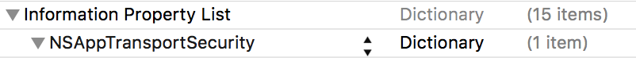
Use the + next to this new entry to create a new Dictionary called NSExceptionDomains. Make a Dictionary within this new element called giphy.com.
Click the + next to this giphy.com entry to create two new entries. Ensure that they both have Boolean types. Name the first NSExceptionRequiresForwardSecrecy with a value of NO, and the second NSIncludesSubdomains with a value of YES.
Once you've done all this, the NSAppTransportSecurity entry in Info.plist should look like this:
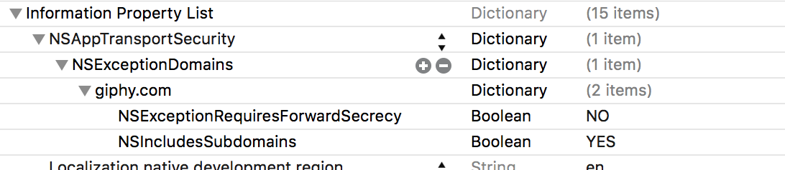
Image Display
Now that you've created a helper function to actually download the image, you can use this to grab the image for a specific GiphyItem. Add the following function to the same class:
private func updateImageForGiphyItem(item: GiphyItem) {
imageView?.image = nil
// 1:
imageDownloadTask?.cancel()
// 2:
if let image = GiphyCollectionItem.imageCache.objectForKey(item.id) as? NSImage {
self.imageView?.image = image
} else {
// 3:
loadImageAysnc(item.url) {
image in
// 4:
self.imageView?.image = image
GiphyCollectionItem.imageCache.setObject(image, forKey: item.id)
}
}
}
-
Before attempting to download a new image, cancel an existing download task, if there is one.
-
Check to see whether the image you're trying to download is already present in the cache.
NSCache is essentially a clever mutable dictionary - you're using the id property of the GiphyItem to index the cached images. If the image is in the cache, update the imageView to display it.
-
The image isn't cached, so use the function you just created to download it asynchronously.
-
Once the image has successfully downloaded, update the
imageView with the new image, and cache the image so it won't be downloaded next time it's needed.
You're almost there with the collection view item - the final piece of the puzzle is to call this image update code when the collection view item is provided with a new GiphyItem model object. Add the following property to the class:
var giphyItem : GiphyItem? {
didSet {
if let giphyItem = giphyItem {
updateImageForGiphyItem(giphyItem)
}
}
}
This checks that the new value isn't nil before calling the function you just created to download the image and update the view.
That's everything you need to do in the collection view item. You now just need to add some code to make the collection view use your custom item.
### Collection View
You've already created an outlet property for the collection view in ViewController.swift, but now you need to configure it. There are two ways to tell a collection view what content it should display - either via data-binding or via a data source. In this introductory tutorial, you're going to use the data source method.
NSCollectionView has a datasource property. This can be set to any object that adopts the NSCollectionViewDataSource protocol. This protocol defines three methods which you must implement to tell the collection view what content it should display.
First, add the following to ViewController:
var giphyItems : [GiphyItem]? {
didSet {
collectionView.reloadData()
}
}
This defines a property - an array of GiphyItem objects, which, when updated, will cause the collection view to update itself to reflect the new data.
Add the following class extension to the bottom of ViewController.swift:
extension ViewController : NSCollectionViewDataSource {
// 1:
func numberOfSectionsInCollectionView(collectionView: NSCollectionView) -> Int {
return 1
}
// 2:
func collectionView(collectionView: NSCollectionView, numberOfItemsInSection section: Int) -> Int {
return giphyItems?.count ?? 0
}
// 3:
func collectionView(collectionView: NSCollectionView, itemForRepresentedObjectAtIndexPath indexPath: NSIndexPath) -> NSCollectionViewItem {
// 4:
let item = collectionView.makeItemWithIdentifier("GiphyCollectionItem", forIndexPath: indexPath)
// 5:
if let item = item as? GiphyCollectionItem {
item.giphyItem = giphyItems?[indexPath.item]
}
return item
}
}
-
A collection view is made up of 1 or more sections - each of which can contain its own set of items. Here, you only need one section.
-
The collection view needs to know how many items there will be in each section. Since there's only one section in your collection view, the number of items is simply the total number of items in the
giphyItems array.
-
The collection view will call this method once for each item in the collection view - requiring you to provide it with the item you want to display.
-
The
makeWithIdentifier(_:, forIndexPath:) method will create a collection view item using the XIB specified by the name. It also implements recycling - once an item has scrolled off screen it'll be recycled to represent a different model object in a different location. This has great memory benefits, but can make code associated with the item more complicated (hence canceling any currently running download tasks).
-
If the created item is of the correct type, provide it with the appropriate model object so that it can display it.
You've now made the ViewController class adopt the NSCollectionViewDataSource protocol - you just need to tell the collection view where to look for its data.
Add the following two lines to the end of the viewDidLoad() method:
collectionView.dataSource = self
collectionView.minItemSize = NSSize(width: 200, height: 200)
collectionView.registerClass(GiphyCollectionItem.self, forItemWithIdentifier: "GiphyCollectionItem")
In addition to configure the data source for the collection view, this also sets the minimum size, and registers your custom GiphyCollectionItem class so that the collection view can use it.
You've actually now finished implementing the results display. It'd be nice to test it though right? Update the search call at the end of viewDidLoad() to match the following:
searchGiphy("excited") {
giphyResult in
switch giphyResult {
case .Error(let error):
print(error)
case .Result(let items):
self.giphyItems = items
}
}
Rather than logging the search results, you're now setting them as the giphyItems property on ViewController.
Build and run gifMe to see the results of all the UI work you've been doing:
 Wow! That's pretty cool right? You've already managed to create a fairly cool app, without too much difficulty.
Something will probably stick out at you though... The search is returning GIFs, but they aren't animating. You're going to fix that next.
Wow! That's pretty cool right? You've already managed to create a fairly cool app, without too much difficulty.
Something will probably stick out at you though... The search is returning GIFs, but they aren't animating. You're going to fix that next.
Animating those GIFs
NSImageView supports animating images out of the box - you just need to toggle a property. You could do this by default for the collection view item, but having a screen full of animating GIFs isn't a great UX. Instead you're going to toggle the animation property when the user clicks on the image view.
OS X has a system of gesture recognizers that are the easiest way to link up complex touch-based user interaction to your code. You're going to add the simplest of these, the Click Gesture Recognizer to gifMe.
Open GiphyCollectionItem.xib, find a Click Gesture Recognizer in the Object library and drag it onto the Image View. You'll see this appear in the Document Outline:
 When a gesture recognizer is triggered, it fires an action - you need to wire that up now.
Open the assistant editor, and ensure that GiphyCollectionItem is visible. Ctrl-drag from the Click Gesture Recognizer in the Document Outline to the
When a gesture recognizer is triggered, it fires an action - you need to wire that up now.
Open the assistant editor, and ensure that GiphyCollectionItem is visible. Ctrl-drag from the Click Gesture Recognizer in the Document Outline to the GiphyCollectionItem class. Change the Connection to Action and name the action handleClick:
 Update the created method to match the following:
Update the created method to match the following:
@IBAction func handleClick(sender: AnyObject) {
if let imageView = imageView {
imageView.animates = !imageView.animates
}
}
When the user clicks on the image, this method will be called, and the animates property will be toggled.
The last thing to do is to reset this property when a new image is provided. Add the following line to the beginning of updateImageForGiphyItem(_:):
imageView?.animates = false
Build and run gifMe and try clicking on the different images. You'll see the animation toggle on and off - pretty cool, huh?
Find Me a GIF
gifMe isn't very useful yet - each time you want to search for a different term you have to recompile the app. You're going to fix that with the addition of a search field in the tool bar.
Open Main.storyboard, find a Toolbar in the Object Library and drag it onto the _Window Controller scene. Double click on this to bring up the toolbar configuration:
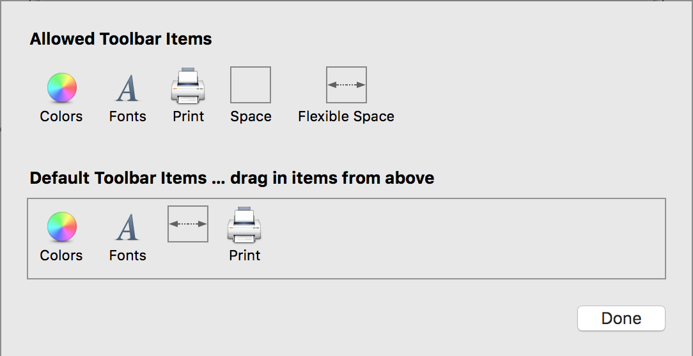
You only need the Flexible Space item in the Allowed Toolbar Items so select each of the others in turn and press delete to remove them. Then find a Search Field in the Object Library and drag it onto the toolbar config. Then drag it from the Allowed Toolbar Items down into the Default Toolbar Items. Your toolbar config will now look like this:
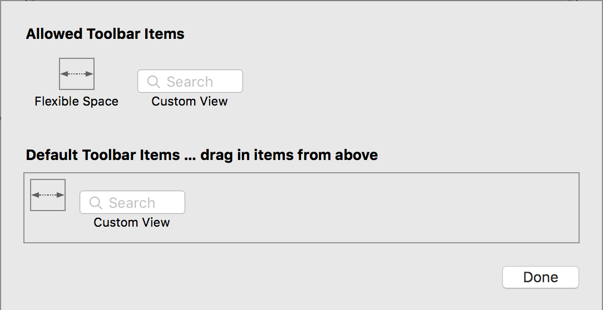
Select the Custom View in the Document Outline and use the Attributes Inspector to remove the Label. Then select the Search Field, and check the Sends Whole Search String property in the Attributes Inspector:
 Hit done to complete your work on the toolbar. Unfortunately there seems to be a bug in the current beta of Xcode whereby the search field is not rendered correctly in Interface Builder. At this stage you can build and run to check that it looks correct in the actual app:
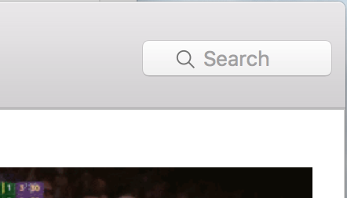
The search field doesn't actually do anything yet - you need to wire it up to some code first. To do that you'll need a custom subclass of
Hit done to complete your work on the toolbar. Unfortunately there seems to be a bug in the current beta of Xcode whereby the search field is not rendered correctly in Interface Builder. At this stage you can build and run to check that it looks correct in the actual app:
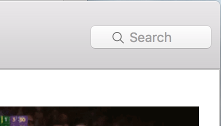
The search field doesn't actually do anything yet - you need to wire it up to some code first. To do that you'll need a custom subclass of NSWindowController.
Select File \ New \ File... from the menu, and then locate OS X \ Source \ Cocoa Class. Name the class WindowController and make it a subclass of `NSWindowController. Ensure that Also create XIB file for user interface is not checked.
Back in Main.storyboard, select the _Window Controller scene, and use the Identity Inspector to set the class to the newly created WindowController:
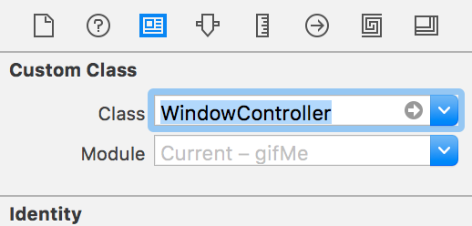
Now that you've got a custom class backing the window controller, you can wire up the search field.
Open the Assistant Editor and ensure that it's displaying WindowController.swift. Ctrl-drag from the Search Field in the Document Outline to Window Controller. Create first an Outlet named searchField:
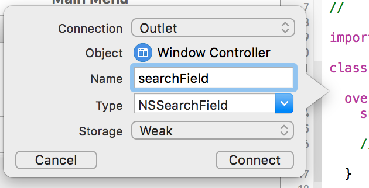
Then, repeat the ctrl-drag, this time creating an Action, naming it handleSearch:
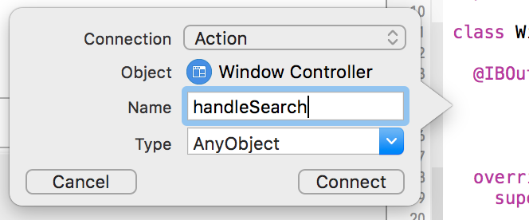
This new action will be called whenever the user presses the enter key after entering content into the search field. You need to add some code to perform the giphy search.
Add the following code to the handleSearch method:
if let vc = contentViewController as? ViewController {
searchGiphy(searchField.stringValue) {
result in
switch result {
case .Error(let error):
print(error.localizedDescription)
case .Result(let giphyItems):
dispatch_async(dispatch_get_main_queue()) {
vc.giphyItems = giphyItems
}
}
}
}
You've seen most of this code before - just using the searchGiphy function you created to perform the search. There are a couple of differences:
-
Before performing the search, you first check that the view controller that this window is displaying is of the correct type - i.e. the custom
ViewController you made to display the results in a collection view.
-
The search is then seeded not with a fixed string, but instead the content of the search field.
-
When the results are returned, they're passed to the content view controller via its
giphyItems property.
One final thing to do - and that's to remove the call to searchGiphy in ViewController.swift. Find the call (inside viewDidLoad()) and delete it. Remember that it is 9 lines long.
Now, build and run to test out your completed app:
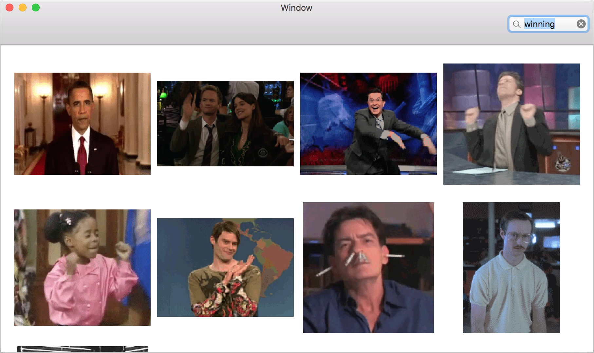
Try using the search box to search for some GIFs, and then clicking on them to play them. That's a pretty amazing app for your first ever OS X app!
Where to go from here
You can download the completed version of gifMe here. If you've enjoyed building this app, maybe you'd like to have a go at adding loading indicators to the collection view items, so that you know when a GIF is being downloaded.
Or maybe you have your own ideas of OS X apps you'd like to create? This introductory series has given you a basic level of knowledge to get started with OS X apps - but there's so much more to learn!
Apple has some great documentation covering all aspects of OS X development - head on over to https://developer.apple.com/library/mac/navigation/
You should also stick around on raywenderlich.com - we've got some awesome OS X tutorials lined up for the coming months!
If you have any comments or questions feel free to reach out on twitter, or in the comments section below!